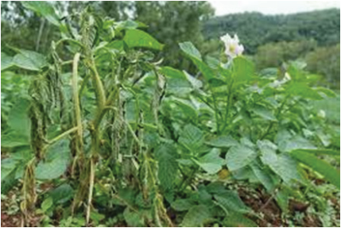
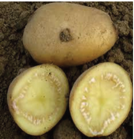

Management of the disease: Monitor and look for the early signs of disease to
initiate early control measures. Ensure adequate fertilisation, particularly with
potassium and phosphorus, to maintain plant health and reduce susceptibility.
Apply the recommended fungicides as a preventive measure or at the first sign of
disease. Adopt improved cultural practices such as crop rotation, field sanitation,
plant spacing, and irrigation. Use round potato varieties that are tolerant to early
blight. Effective management of early blight involves an integrated approach
combining cultural practices, resistant varieties, and timely chemical applications.
(c) Bacterial wilt
Bacterial wilt of potato is a severe disease caused by a soil-borne bacterium called
Ralstonia solanacearum. The disease spreads through contaminated soil, water,
tools, nematodes, and plant materials.


Figure 5.8: Bacterial wilt disease in potato plant and tuber
Symptoms: Initial signs include wilting of the leaves during the hottest part of
the day, which may recover at night. As the disease progresses, wilting becomes
permanent. A brown discolouration can be seen in the vascular tissues of the stem
when cut open. When infected with the bacteria, a white, milky, sticky ooze may
be visible from cut stems or tubers (Figure 5.8).
Management: The disease can be managed through crop rotation, field sanitation,
use of resistant varieties, eradication of infected plants, and proper nutrient and
water management.
Viral diseases of round potato
Like other crops, round potatoes are susceptible to viral diseases that can
significantly impact yield and quality.